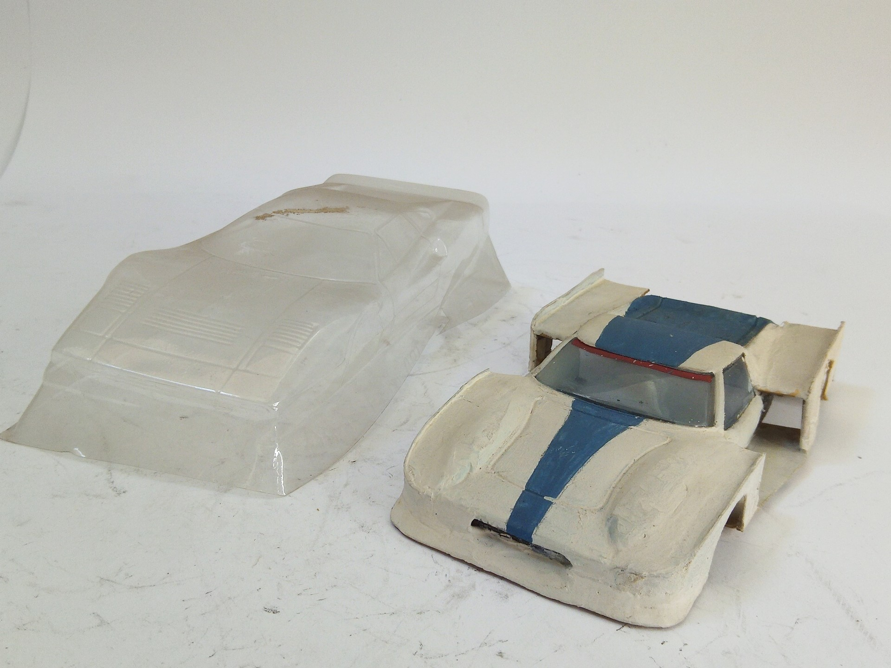

Auto e veicoli stradali · scale model archive
1/32 slot car bodies:
1/32 slot car bodies:. - Ferrari GTO (acetate) has not yellowed over all these years - Lotus Europa, incomplete conversion from Policar body, sponsor…

Photo gallery
English description
- Ferrari GTO (acetate) has not yellowed over all these years
- Lotus Europa, incomplete conversion from Policar body, sponsor Minolta driver Harald Ertl
Descrizione italiana
- Ferrari GTO (acetate) has not yellowed over all these years.
- Lotus Europa, incompleto conversione da Poliauto body, sponsor Minolta pilota Harald Ertl.